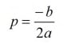
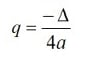
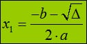
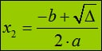
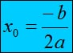

Funkcja kwadratowa - postać ogólna
a, b, c ∈ R, a ≠ 0
y = ax2 + bx + c
Delta
Δ = b2 - 4ac
Funkcja kwadratowa - postać kanoniczna


a, p, q ∈ R, a ≠ 0
y = a(x - p)2 + q
Pierwiastek funkcji kwadratowej
Kiedy Δ > 0, funkcja kwadratowa ma 2 pierwiastki:


Kiedy Δ = 0, funkcja kwadratowa ma 1 pierwiastek:

Kiedy Δ < 0, funkcja kwadratowa nie ma pierwiastków
Funkcja kwadratowa - postać iloczynowa
y = a(x-x1)(x-x2)